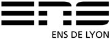

The Institution
The Ecole Normale Supérieure de Lyon (ENSL) is one of the main French institutions of higher education in France.
The ENSL hosts the French Institute of Education (former National Institute for Educational research INRP). IFE is a national organisation for research, training and the mediation of knowledge regarding education, based on permanent interaction with educational communities by involving associate teachers, as well as by proposing scientific and technological resources.
View WebsiteThe Team
Gilles Aldon
Gilles Aldon is a mathematics teacher and researcher at the Ecole Normale Supérieure de Lyon. He is particularly involved in research on the integration of new technologies, especially in computer algebra systems in the classroom. His research focuses on the links between research and the actual use of such systems in the classroom.
Luc Trouche
Luc Trouche is full professor of mathematics education. His field of research is in didactics of mathematics and ICT, focusing on the processes of designing pedagogical resources integrating technology for mathematics learning and teaching.